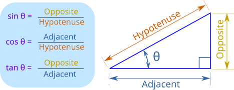

Interactive Unit Circle
Sine, Cosine and Tangent ... in a Circle or on a Graph.
images/circle-unit.js
Sine, Cosine and Tangent
Sine, Cosine and Tangent (often shortened to sin, cos and tan) are each a ratio of sides of a right triangle:

For a given angle θ each ratio stays the same
no matter how big or small the triangle is
Why the Unit Circle?
A Unit Circle has a radius of 1, so the hypotenuse is 1, and our formulas become super simple:
- cos(θ) = AdjacentHypotenuse = Adjacent1 = Adjacent (the x-distance)
- sin(θ) = OppositeHypotenuse = Opposite1 = Opposite (the y-distance)
So on a unit circle, any point at angle θ has the coordinates (cos θ, sin θ).